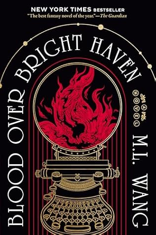
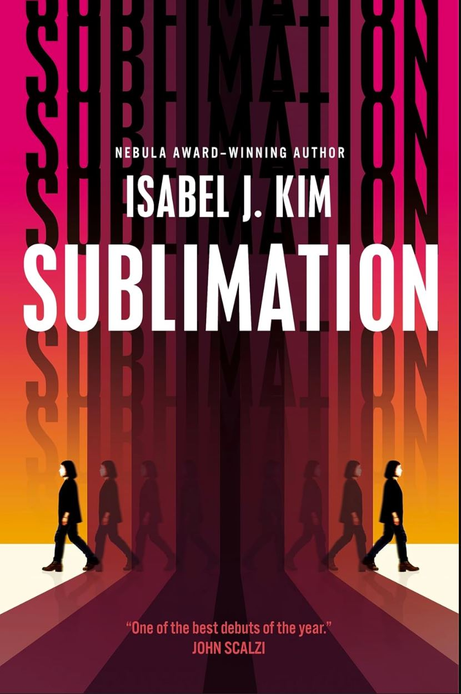
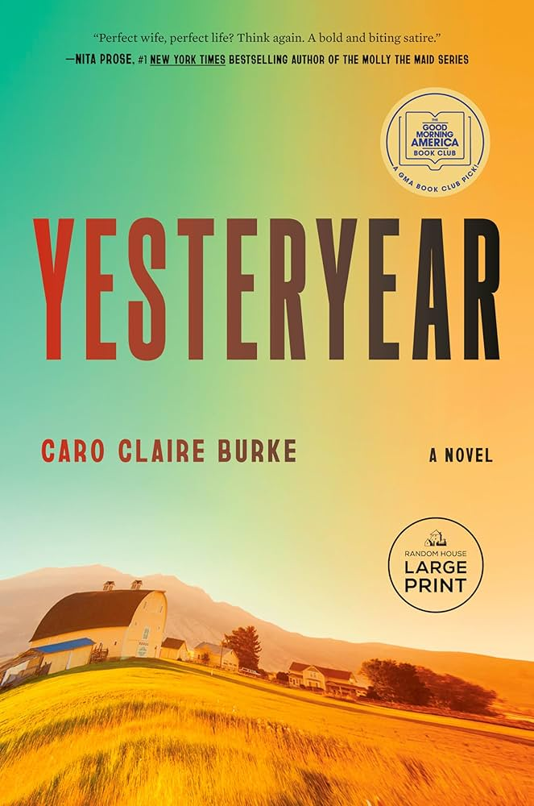
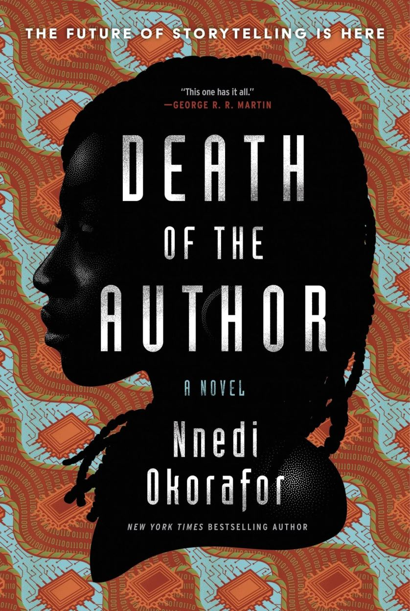
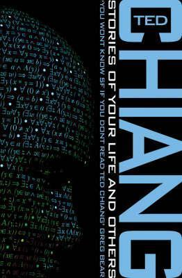
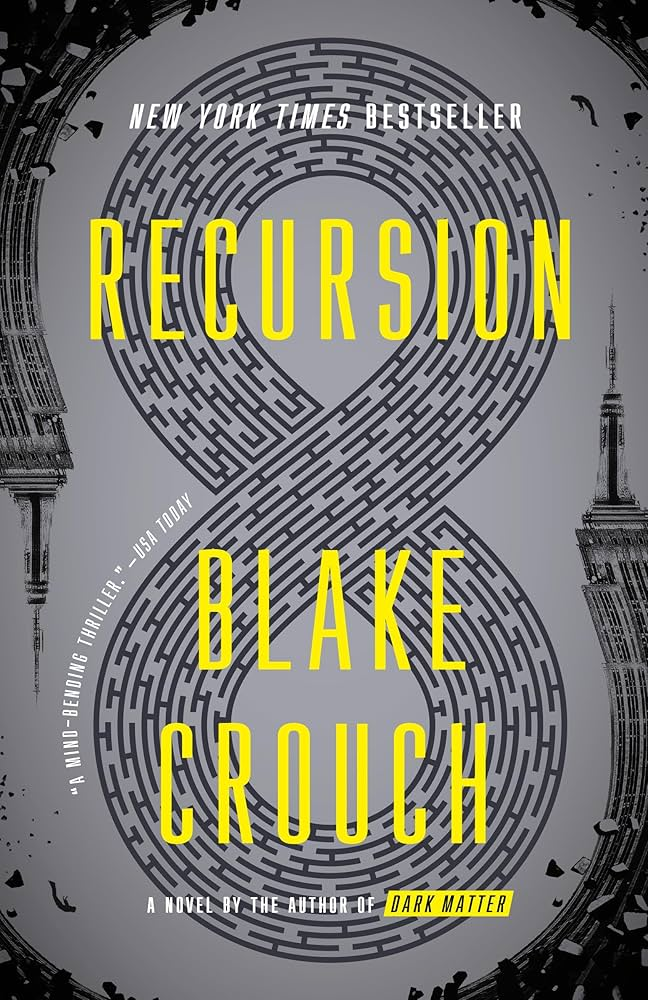

This is a book club where my beloved friends and I read and chat about books!
Schedule
Here you can find what our book club schedule is!
Since we are just getting started, the schedule is a little wonky. Eventually, we will switch over to making book club the first Saturday of the month. That way it's a little easier to plan around for future sessions.
Our next book club will be:
| Date | Event |
|---|---|
| Saturday June 27, 2026 | Book Club to discuss: Tomorrow and Tomorrow and Tomorrow |
| TBD | Book Club to discuss: Vote for the next book below! |
Next Book Suggestions
Here's the options for what we can read next. Please vote for the next book here.
| Cover | Title / Description | Author | Pages |
|---|---|---|---|
|
 |
Blood over Bright Haven
A "dark academia" novel about the first woman ever admitted to a prestigious order of mages who unravels a secret conspiracy that could change the practice of magic forever. Lots of great themes in here about power, exploitation, race and class. The magic system will appeal to software engineers. |
M.L. Wang | 428 |
|
 |
Sublimation
The debut sci-fi novel that explores immigration through a speculative lens where emigrating creates a second, identical "instance" of a person, one who stays behind while the other moves on. If you were a fan of the tv show Severance, this has similar vibes! |
Isabel J. Kim | 368 |
|
 |
Yesteryear
A modern day "tradwife" influencer wakes up in 1855, and is forced to live the harsh reality of pioneer life she only pretended to portray online, leading to a dark, satirical story about fame, faith, and the performance of womanhood.
|
Caro Claire Burke | 400 |
|
 |
Death of the Author
From the same author who wrote the Binti series, this sci-fi novel follows the story of a disabled Nigerian-American writer, Zelu, who finds fame after writing a sci-fi novel, Rusted Robots, about androids and AI. The lines between her novel and her life begin to blur and explores the role of technology shaping humanity. |
Nnedi Okorafor | 448 |
|
Elder Race
A short novella but very rich! It blends science fiction and fantasy, telling the same story from two different perspectives: a fantasy-style narrative of a princess seeking a sorcerer to fight a demon, and a science fiction narrative of an anthropologist studying a primitive culture while dealing with a technological threat (a virus) that the locals perceive as supernatural. |
Adrian Tchaikovsky | 199 |
Previously Read Books
Here's what we've read in the past:
| Date Read | Cover | Title / Description | Author | Pages |
|---|---|---|---|---|
| March 12, 2026 |
All Systems Red (Murderbot #1)
Company-supplied droid becomes self-aware. Adventures ensue. Discussion questions. |
Martha Wells | 144 | |
| April 12, 2026 |
 |
Stories of Your Life and Others
A collection of Black-Mirror-esque short stories. Discussion questions. |
Ted Chiang | 281 |
| May 9, 2026 |
 |
Recursion
A sci-fi thriller about a mysterious phenomenon called False Memory Syndrome, where people experience vivid memories of lives they never lived, causing them to go mad. Discussion questions. |
Blake Crouch | 329 |
| June 6, 2026 |
The Hitchhiker's Guide to the Galaxy
After Earth is unexpectedly destroyed, an ordinary man is swept into a wild adventure across space with an eccentric group of companions. Discussion questions. |
Douglas Adams | 216 | |
| June 27, 2026 |

|
Tomorrow and Tomorrow and Tomorrow
Two friends come together as creative partners to create a video game. This brings them success, but what else? Discussion questions. |
Gabrielle Zevin | 300 |
Past Book Suggestions
You can find previously suggested books here: Book Suggestions
If you were intrigued by a book that didn't win the vote this time around, worry not! I will catalog all the proposed books here! That way, we can throw it back on the ballot in the future OR you can reference them for your own reading pleasure.